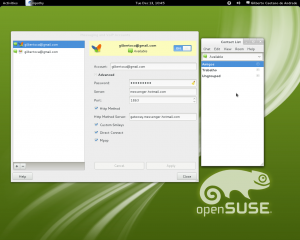

Empathy não conectando ao MSN
by Gilberto C. Andrade on 22 Junho 2010
Recentimente resolvi, novamente, atualizar o gnome da versão 2.28 para 2.30 através do procedimento descrito neste endereço: http://en.openSUSE.org/GNOME/2.30 . Como sempre sem problemas. O gnome é um ambiente bastante consistente e a meu ver seguro! Mas um componente que uso como meio de comunicação - Empathy - começou a apresentar um erro conexão usando o protocolo MSN. Não havia percebido tal problema porque até então só tinha utilizado o protocolo Jabber.
Bem, após uma pesquisa pelo google, encontrei a solução do problema: desisntalar o *pacote telepathy-butterfly. *Lembrando que há a necessidade de fechar o programa antes de remover este componente.
Atualização(13/12/2011): Hoje, após uma atualização, o empathy parou de conectar. Voltando àquela discussão no forum openSUSE, notei que a solução é bem mais simples:

Lembre-se: você precisa fechar o aplicativo(Empathy).Atualização(28/11/2011): No trabalho já estou utilizando o openSUSE 12.1 (adaptando-me ao novo jeito do gnome 3). Este gerenciador de mensagens, novamente, veio com problema para conectar ao protocolo MSN. Desta vez não precisamos desinstalar nada, apenas realizar uma pequena modificação em uma biblioteca que o acompanha. Edite o seguinte arquivo da biblioteca ql:
e faça a seguinte modificação:
Lembre-se: você precisa fechar o aplicativo(Empathy).
{kind=link}
Espero que esta informação ajude a outros colegas usuários linux.